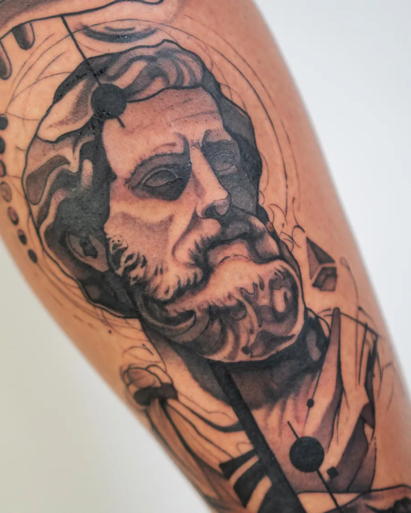
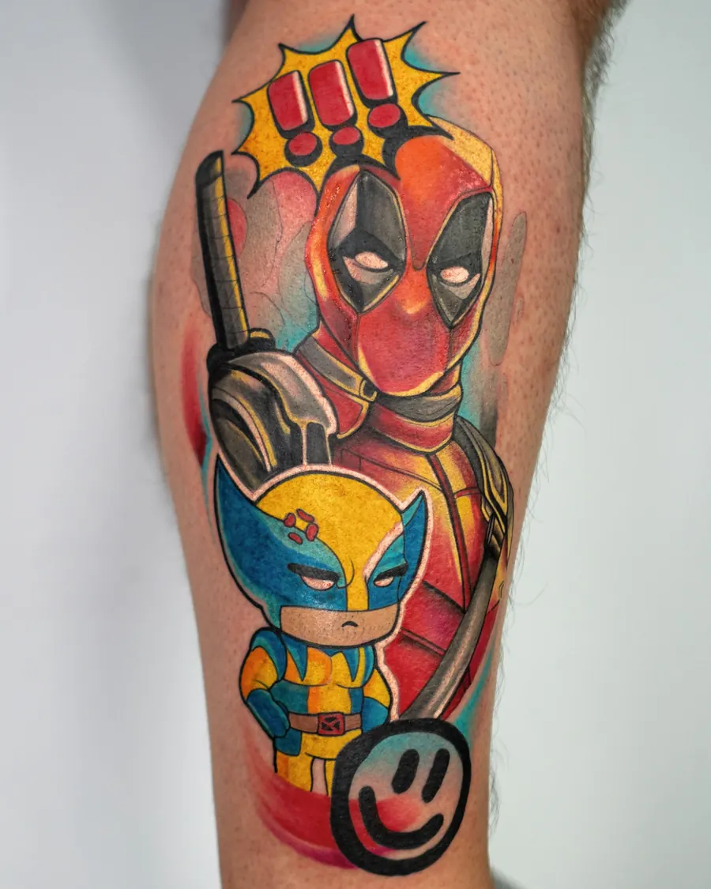
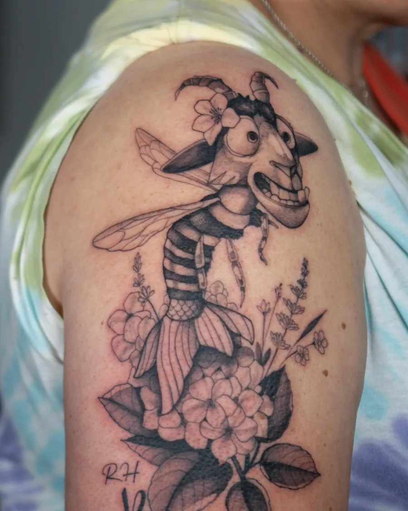
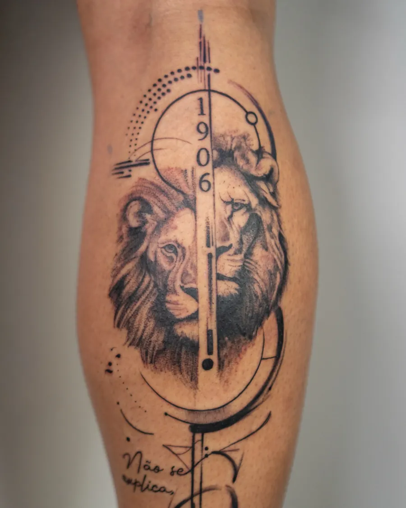
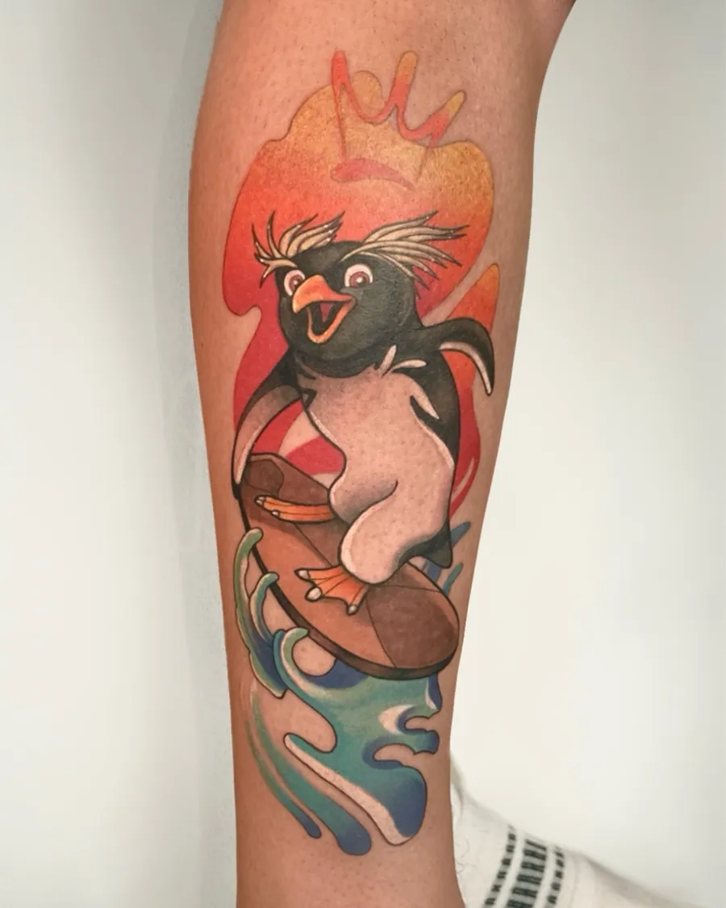
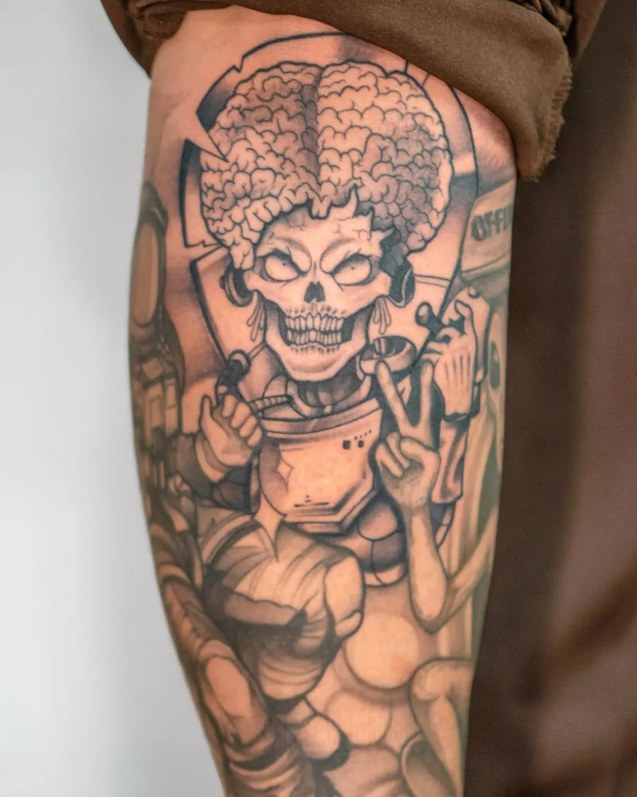
Tatuador no Santa Frida Art Studio · Batalha, Leiria
Cor, preto e cinza ou linha fina. O desenho é sempre feito para ti.
Trabalhos
Três maneiras de tatuar
Há quem venha pela cor das personagens, há quem venha pelo preto e cinza com sombra e quem queira uma linha fina que quase não pesa. O Tiago faz as três com o mesmo cuidado.
Fresca e cicatrizada
O trabalho vê-se meses depois
Acabada de fazer, qualquer tatuagem brilha. O que conta é como fica quando a pele sara: o contorno firme, a cor no sítio e o preto sem manchas. Este pinguim foi fotografado nos dois momentos.
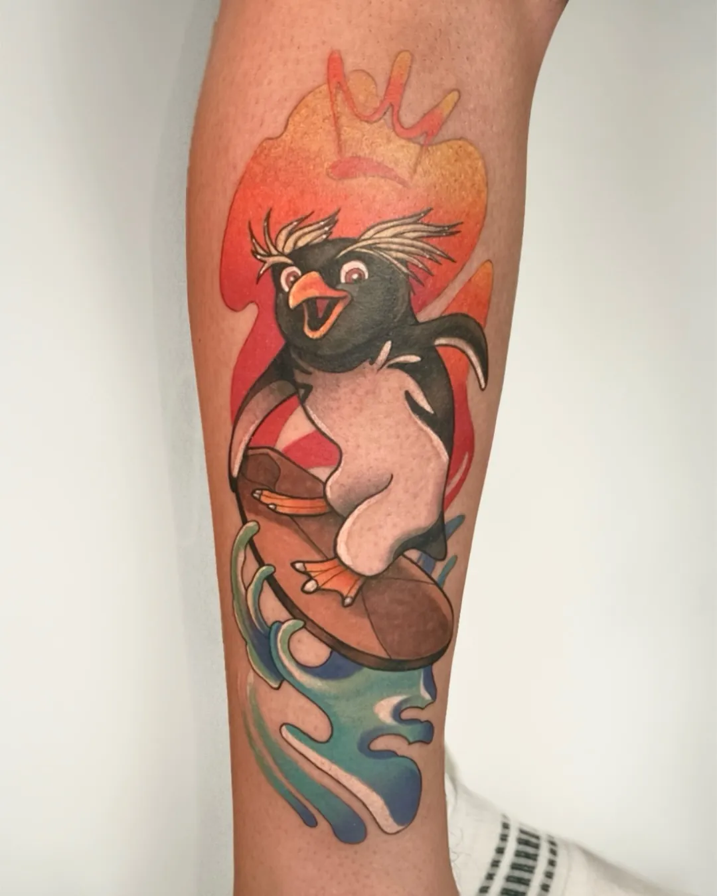
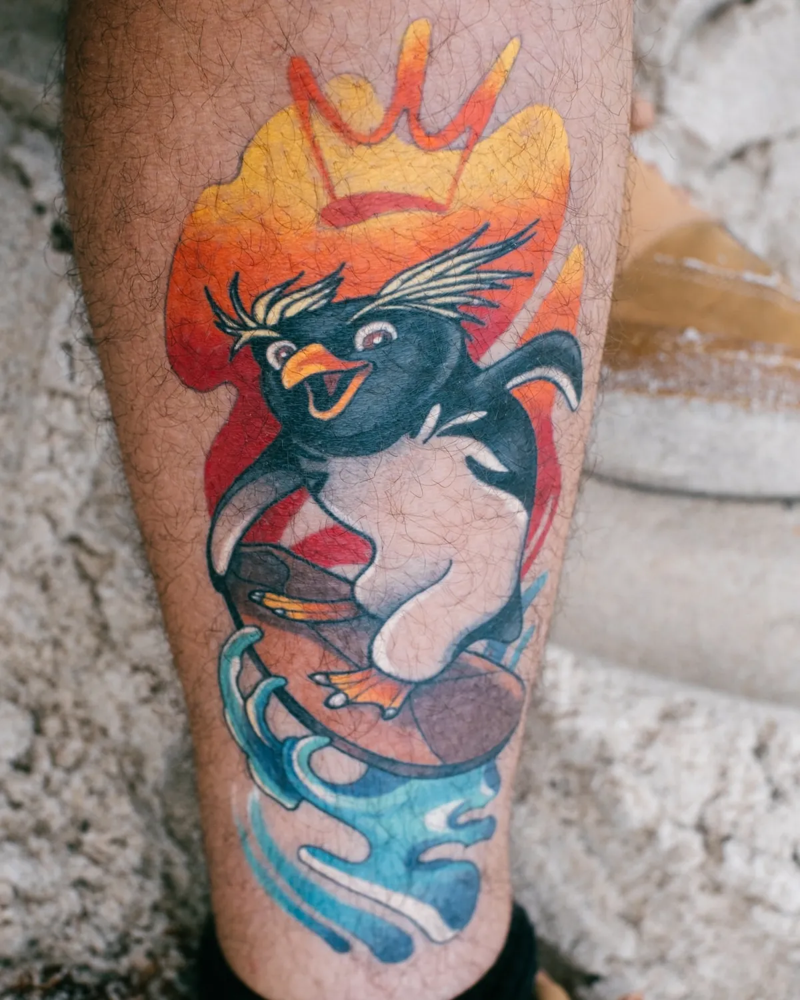
Processo
Começa muito antes da agulha
Os cuidados, os produtos, o espaço e o tempo de cada sessão: tudo tem de estar à altura do resultado.
O estúdio
Santa Frida Art Studio
Durante quatro anos foi o Catarina Cerejo Art Room. Em outubro de 2026 a casa ganhou o nome que já andava no ar há muito tempo, e o altar da Santa Frida passou a ser a peça central.
É um estúdio pensado ao pormenor para que estejas confortável, seguro e sem pressa. O Tiago divide-o com a Catarina Cerejo, e há dias em que tatuam os dois ao mesmo tempo.
“Primeiro a Santa Frida, depois todos os Santos.”
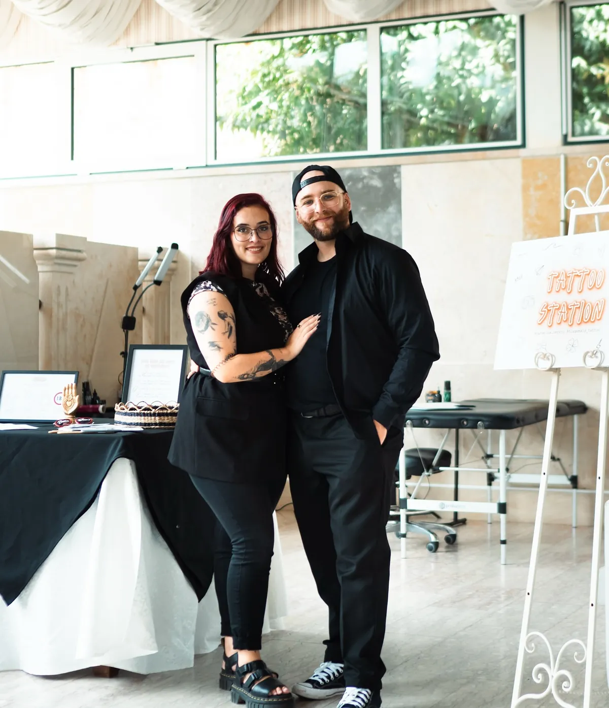
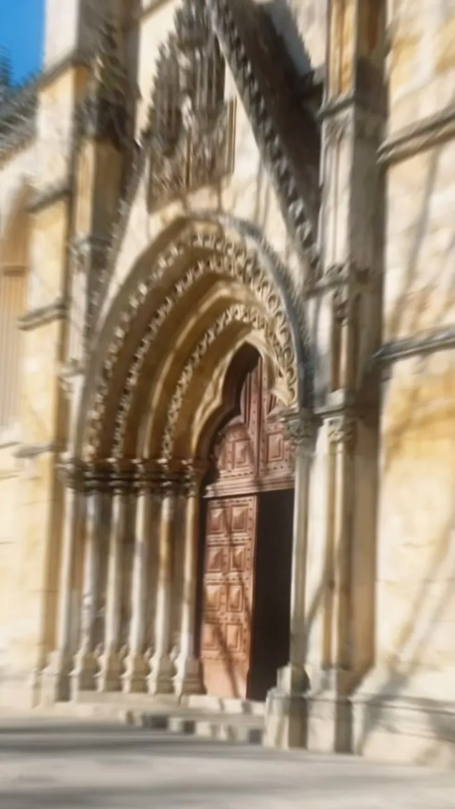
Batalha, Leiria · a poucos passos do Mosteiro
Na estrada
Também tatua fora da Batalha
Guest spots em Portugal e lá fora. As datas novas saem primeiro no Instagram, com vagas contadas.
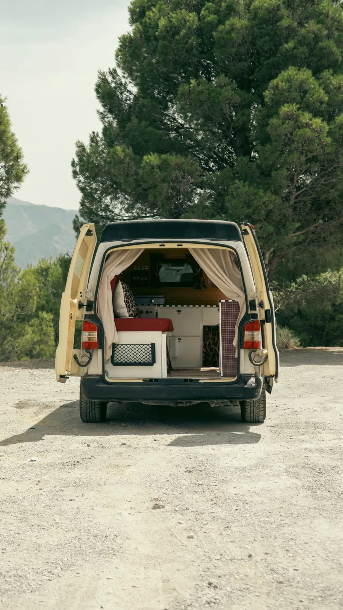
- DEPulheim, AlemanhaFarbStich Tattoo Studio · julho e outubro de 2026
- PTPortoThe Inky Club · julho de 2026
- PTTomarGuest spot · maio de 2025
- PTLisboaOnde começou, há cerca de sete anos
- PTOporto TattooConvenção de tatuagem do Porto
- 🍀Próxima paragemA campervan está pronta. Segue no Instagram.
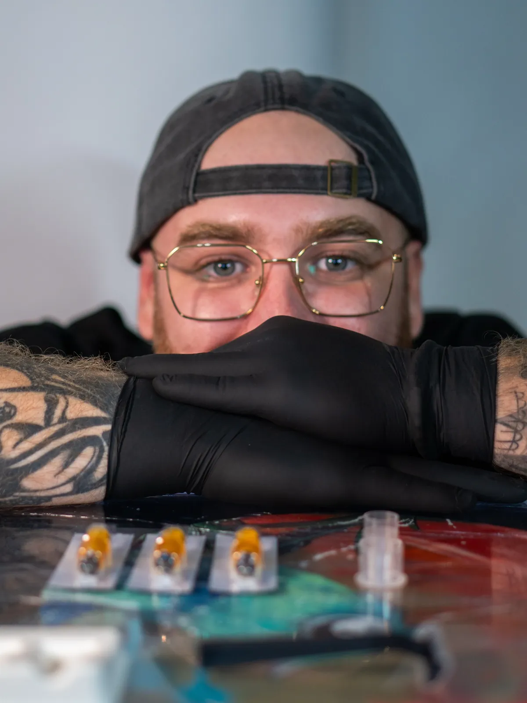
Sobre
Tiago Maia
Começou a tatuar há cerca de sete anos em Lisboa, onde passou por vários estúdios. Em 2025 mudou-se para a Batalha e juntou-se à Catarina Cerejo no estúdio que hoje é o Santa Frida.
Não se fecha num estilo. Faz cor, preto e cinza e linha fina, desenha flashes próprios e gosta de projetos com liberdade criativa, de Alice no País das Maravilhas a retratos de animais.
Além da tatuagem, fotografa e grava vídeo. É ele que faz grande parte das imagens que vês aqui.
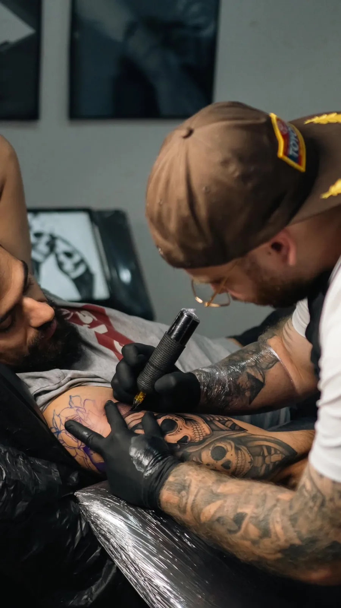
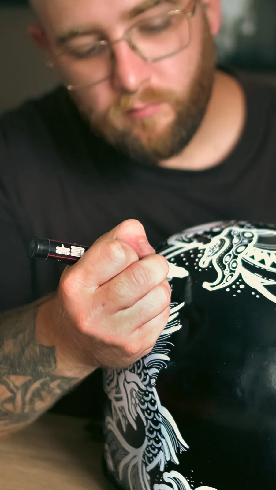
Marcar
Como marcar a tua tatuagem
As marcações são feitas por mensagem privada no Instagram.
- A ideia
Conta o que queres tatuar, a zona do corpo e o tamanho aproximado. Junta referências, se tiveres.
- O desenho
Cada projeto é desenhado à medida. Se escolheres um desenho disponível, ele faz a montagem numa foto da tua pele.
- A sessão
Sem pressa, no tempo que a peça pede. Tatuagens grandes fazem-se em várias sessões.
- Cicatrização
Sais com as indicações de cuidado e o Tiago acompanha até a pele sarar.
Também há vales de oferta, para quem não sabe o que oferecer.